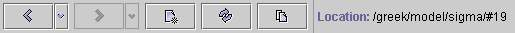

For all pages a common toolbar is given. At the beginning it has forward
and backward buttons with browsing capability. Both have sub menu
where you can selectpreviously visited pages. The new button creates
new SdaiEdit application whichwill share some general data (session) between
one or more SdaiEdit applications and willallow you to work on them in parallel.
The go button proceeds to the page of selected item (as double click
does). The screen can be refreshedto display the actual data with refresh
button. Copy all button copies all contents ofpage data as a textual
representation to the system clipboard. The actual locationof the
displayed page (repository/model/extent/instance) is also given in the common
toolbar.